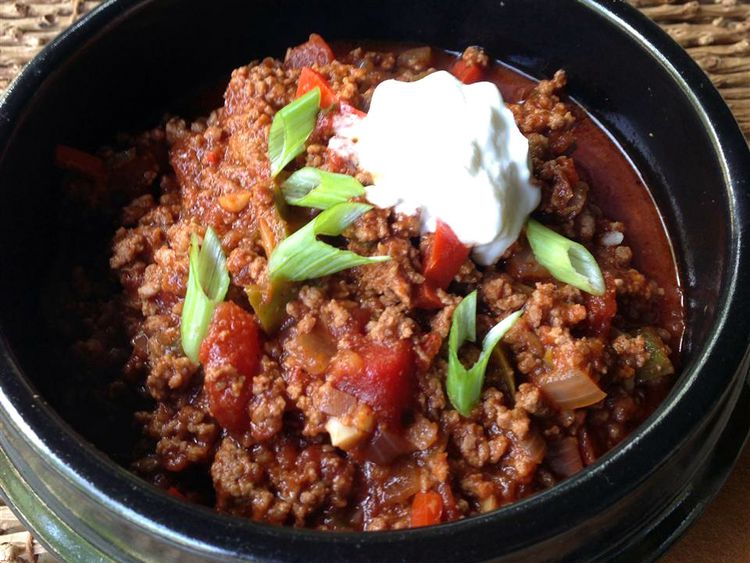

Paleo Chili
While pinto beans are generally considered to be a staple of any chili recipe,
that is not the case with recipes that adhere to the paleo diet. Designed to most closely resemble
the diet of our paleolithic ancestors, paleo chili is made without the beans and any thickening
flour derived from grains. Not to fear, this recipe delivers all of the flavor and none of the
unpleasant gastrointestinal symptoms often associated with chili. Everyone around you says thank
you!
**Note: While this dish can be immediately eaten after preparing, it is best enjoyed
after allowing the flavors to meld and intensify for roughly 24 hours. Non-paleo folks can add
pinto beans. Beef can also be substituted for bison and turkey sausage for pork sausage.
Ingredients:
- 1 dried chipotle pepper, stem removed
- 1 cup boiling water
- 1 ½ teaspoons coconut oil
- 1 cup chopped yellow onion
- 1 cup chopped green bell pepper
- 1 cup chopped red bell pepper
- 4 garlic cloves, minced
- 1 pound ground bison
- ½ pound spicy ground pork sausage
- 1 tablespoon chili powder
- 1 tablespoon ground cumin
- 1 teaspoon dried oregano
- 1 teaspoon unsweetened cocoa powder
- 1 teaspoon Worcestershire sauce
- 1 (28 ounce) can crushed tomatoes
- 1 ½ teaspoons kosher salt
- ½ teaspoon ground black pepper
Steps:
- Step 1 (10 mins): Bring water to a boil and soak chipotle pepper
until softened. After removing pepper from water, mince.
- Step 2 (5-10 mins): Melt coconut in a large pot using medium heat. Then, cook and stir
the onion, as well as green and red bell pepper until tender.
- Step 3 (1 min): Stir the minced chipotle and garlic into onion mixture
and cook until fragrant.
- Step 4 (10-12 mins): Stir bison and pork sausage into onion mixture.
Cook and stir until meat is browned and crumbly.
- Step 5 (10 mins): Stir the oregano, cumin, cocoa powder, and
Worcestershire sauce into the bison mixture. Add crushed tomatoes, salt, and pepper. Stir
and bring to a boil. Reduce heat to low and simmer until flavors are blended.